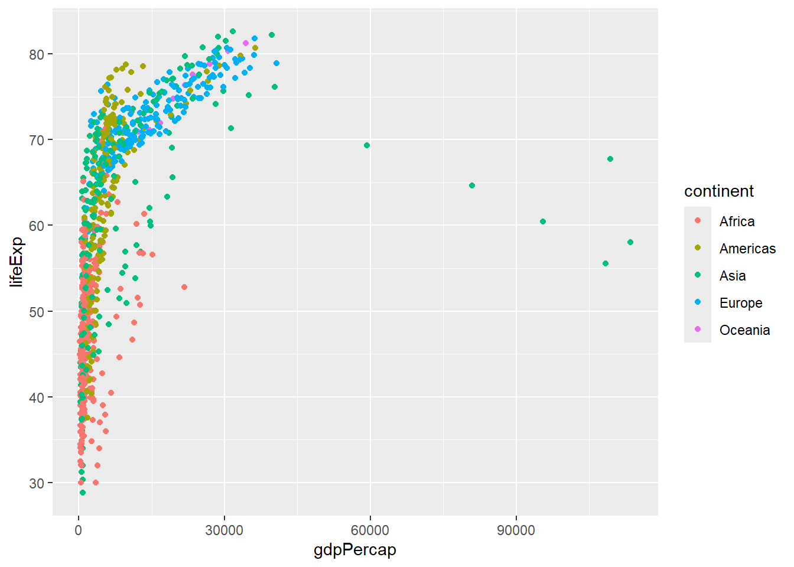

## Checks if the required file is present, and downloads if not
if(!file.exists("raw_data/gapminder.csv")) {
dir.create("raw_data/",showWarnings = FALSE)
download.file("https://raw.githubusercontent.com/markdunning/markdunning.github.com/refs/heads/master/files/training/r/raw_data/gapminder.csv", destfile = "raw_data/gapminder.csv")
}Introduction to R - Part 2
Overview
Starting to play with data with the dplyr and ggplot2 packages
Topics covered
- Choosing which columns to show from the data
- Choosing what rows to keep in the data
- Adding / altering columns
- Sorting the rows in our data
- Introduction to plotting
Data Manipulation
If you followed the first part, you should already have some example data downloaded. The command to do this is repeated below.
We also discussed in the previous part how to read the example dataset into R.
library(readr)
gapminder <- read_csv("raw_data/gapminder.csv")Manipulating Columns
We are going to use functions from the dplyr package to manipulate the data frame we have just created. It is perfectly possible to work with data frames using the functions provided as part of “base R”. However, many find it easy to read and write code using dplyr.
There are many more functions available in dplyr than we will cover today. An overview of all functions is given in a cheatsheet.
Help with dplyr functions
- dplyr cheatsheet. The “cheatsheet” is also available through the RStudio Help menu. However, I don’t think of this as cheating to have such information to hand. There are far too many functions to remember all of them!
Before using any of these functions, we need to load the library:-
library(dplyr)selecting columns
We can access the columns of a data frame using the select function. This lets us have control over what is printed to the screen. Admitedly the dataset we are using here is rather small (being only six columns), but these useful functions really shine when faced with 10s or 100s of columns
by name
Firstly, we can select column by name, by adding bare column names (i.e. not requiring quote marks around the name) after the name of the data frame, separated by a , .
select(gapminder, country, continent)# A tibble: 862 × 2
country continent
<chr> <chr>
1 Afghanistan Asia
2 Afghanistan Asia
3 Afghanistan Asia
4 Afghanistan Asia
5 Afghanistan Asia
6 Afghanistan Asia
7 Afghanistan Asia
8 Afghanistan Asia
9 Afghanistan Asia
10 Afghanistan Asia
# ℹ 852 more rowsNow lets imagine that we want to see all the columns apart from country. It would quickly become tedious, not to mention and prone to error, if we had to type every column name we wanted to keep by-hand.
Thankfully, we can also omit columns from the ouput by putting a minus (-) in front of the column name. Note that this is not the same as removing the column from the data permanently.
select(gapminder, -country)# A tibble: 862 × 5
continent year lifeExp pop gdpPercap
<chr> <dbl> <dbl> <dbl> <dbl>
1 Asia 1952 28.8 8425333 779.
2 Asia 1957 30.3 9240934 821.
3 Asia 1962 32.0 10267083 853.
4 Asia 1967 34.0 11537966 836.
5 Asia 1972 36.1 13079460 740.
6 Asia 1977 38.4 14880372 786.
7 Asia 1982 39.9 12881816 978.
8 Asia 1987 40.8 13867957 852.
9 Asia 1992 41.7 16317921 649.
10 Asia 1997 41.8 22227415 635.
# ℹ 852 more rowsThe dplyr package has been carefully developed over the years with the needs of the data analyst in mind. Ideally we would rather be spending our time exploring and understanding data than writing reams of code. For this reason, you will often find a helpful function for a common task.
If you find yourself having to write lots of code to achieve a data manipulation task, the chances are the a convenient function already exists.
range of columns
A range of columns can be selected by the : operator.
select(gapminder, lifeExp:gdpPercap)# A tibble: 862 × 3
lifeExp pop gdpPercap
<dbl> <dbl> <dbl>
1 28.8 8425333 779.
2 30.3 9240934 821.
3 32.0 10267083 853.
4 34.0 11537966 836.
5 36.1 13079460 740.
6 38.4 14880372 786.
7 39.9 12881816 978.
8 40.8 13867957 852.
9 41.7 16317921 649.
10 41.8 22227415 635.
# ℹ 852 more rowshelper functions
There are a number of helper functions can be employed if we are unsure about the exact name of the column.
select(gapminder, starts_with("co"))# A tibble: 862 × 2
country continent
<chr> <chr>
1 Afghanistan Asia
2 Afghanistan Asia
3 Afghanistan Asia
4 Afghanistan Asia
5 Afghanistan Asia
6 Afghanistan Asia
7 Afghanistan Asia
8 Afghanistan Asia
9 Afghanistan Asia
10 Afghanistan Asia
# ℹ 852 more rowsselect(gapminder, contains("life"))# A tibble: 862 × 1
lifeExp
<dbl>
1 28.8
2 30.3
3 32.0
4 34.0
5 36.1
6 38.4
7 39.9
8 40.8
9 41.7
10 41.8
# ℹ 852 more rows# selecting the last and penultimate columns
select(gapminder, last_col(1),last_col())# A tibble: 862 × 2
pop gdpPercap
<dbl> <dbl>
1 8425333 779.
2 9240934 821.
3 10267083 853.
4 11537966 836.
5 13079460 740.
6 14880372 786.
7 12881816 978.
8 13867957 852.
9 16317921 649.
10 22227415 635.
# ℹ 852 more rowsIt is also possible to use the column number in the selection.
select(gapminder, 4:6)# A tibble: 862 × 3
lifeExp pop gdpPercap
<dbl> <dbl> <dbl>
1 28.8 8425333 779.
2 30.3 9240934 821.
3 32.0 10267083 853.
4 34.0 11537966 836.
5 36.1 13079460 740.
6 38.4 14880372 786.
7 39.9 12881816 978.
8 40.8 13867957 852.
9 41.7 16317921 649.
10 41.8 22227415 635.
# ℹ 852 more rowsThe select function can be used with just a single column name - in a similar manner to the $ operation we saw in Part 1. However, select always returns a data frame whereas $ gives a vector. Compare the output of the following code chunks
select(gapminder, pop)# A tibble: 862 × 1
pop
<dbl>
1 8425333
2 9240934
3 10267083
4 11537966
5 13079460
6 14880372
7 12881816
8 13867957
9 16317921
10 22227415
# ℹ 852 more rowsgapminder$popThe consequence of this is that you cannot use functions such as mean in combination with select
pops <- select(gapminder, pop)
mean(pops)In the next session we will see how to calculate summary statistics on particular columns in our data. For now, a useful function is pull that will return the correct type of data required for a function such as mean.
pops <- pull(gapminder,pop)
mean(pops)[1] 40918865Restricting rows with filter
So far we have been returning all the rows in the output. We can use what we call a logical test to filter the rows in a data frame. This logical test will be applied to each row and give either a TRUE or FALSE result. When filtering, only rows with a TRUE result get returned.
For example we filter for rows where the lifeExp variable is less than 40. You can think of R looking at each row of the data frame in turn and deciding whether the lifeExp value in that row is less than 40. If so, that row will be shown on the screen.
filter(gapminder, lifeExp < 40)# A tibble: 65 × 6
country continent year lifeExp pop gdpPercap
<chr> <chr> <dbl> <dbl> <dbl> <dbl>
1 Afghanistan Asia 1952 28.8 8425333 779.
2 Afghanistan Asia 1957 30.3 9240934 821.
3 Afghanistan Asia 1962 32.0 10267083 853.
4 Afghanistan Asia 1967 34.0 11537966 836.
5 Afghanistan Asia 1972 36.1 13079460 740.
6 Afghanistan Asia 1977 38.4 14880372 786.
7 Afghanistan Asia 1982 39.9 12881816 978.
8 Angola Africa 1952 30.0 4232095 3521.
9 Angola Africa 1957 32.0 4561361 3828.
10 Angola Africa 1962 34 4826015 4269.
# ℹ 55 more rowsTesting for equality can be done using ==. This will only give TRUE for entries that are exactly the same as the test string.
filter(gapminder, country == "Zambia")# A tibble: 0 × 6
# ℹ 6 variables: country <chr>, continent <chr>, year <dbl>, lifeExp <dbl>,
# pop <dbl>, gdpPercap <dbl>N.B. For partial matches, the grepl function and / or regular expressions (if you know them) can be used.
filter(gapminder, grepl("land", country))# A tibble: 36 × 6
country continent year lifeExp pop gdpPercap
<chr> <chr> <dbl> <dbl> <dbl> <dbl>
1 Finland Europe 1952 66.6 4090500 6425.
2 Finland Europe 1957 67.5 4324000 7545.
3 Finland Europe 1962 68.8 4491443 9372.
4 Finland Europe 1967 69.8 4605744 10922.
5 Finland Europe 1972 70.9 4639657 14359.
6 Finland Europe 1977 72.5 4738902 15605.
7 Finland Europe 1982 74.6 4826933 18533.
8 Finland Europe 1987 74.8 4931729 21141.
9 Finland Europe 1992 75.7 5041039 20647.
10 Finland Europe 1997 77.1 5134406 23724.
# ℹ 26 more rowsWe can also test if rows are not equal to a value using !=
filter(gapminder, continent != "Europe")# A tibble: 670 × 6
country continent year lifeExp pop gdpPercap
<chr> <chr> <dbl> <dbl> <dbl> <dbl>
1 Afghanistan Asia 1952 28.8 8425333 779.
2 Afghanistan Asia 1957 30.3 9240934 821.
3 Afghanistan Asia 1962 32.0 10267083 853.
4 Afghanistan Asia 1967 34.0 11537966 836.
5 Afghanistan Asia 1972 36.1 13079460 740.
6 Afghanistan Asia 1977 38.4 14880372 786.
7 Afghanistan Asia 1982 39.9 12881816 978.
8 Afghanistan Asia 1987 40.8 13867957 852.
9 Afghanistan Asia 1992 41.7 16317921 649.
10 Afghanistan Asia 1997 41.8 22227415 635.
# ℹ 660 more rowstesting more than one condition
There are a couple of ways of testing for more than one pattern. The first uses an or | statement. i.e. testing if the value of country is Zambia or the value is Zimbabwe. Remember to use double = sign to test for string equality; ==.
filter(gapminder, country == "Zambia" | country == "Zimbabwe")# A tibble: 0 × 6
# ℹ 6 variables: country <chr>, continent <chr>, year <dbl>, lifeExp <dbl>,
# pop <dbl>, gdpPercap <dbl>
The difference between “and” and “or”
Consider the following code. Is the output as you expect? ü§î
filter(gapminder, country == "Zambia", country == "Zimbabwe")# A tibble: 0 × 6
# ℹ 6 variables: country <chr>, continent <chr>, year <dbl>, lifeExp <dbl>,
# pop <dbl>, gdpPercap <dbl>The %in% function is a convenient function for testing which items in a vector correspond to a defined set of values.
filter(gapminder, country %in% c("Zambia", "Zimbabwe"))# A tibble: 0 × 6
# ℹ 6 variables: country <chr>, continent <chr>, year <dbl>, lifeExp <dbl>,
# pop <dbl>, gdpPercap <dbl>We can require that two or more tests are TRUE, e.g. which years in Zambia had a life expectancy less than 40, by separating conditional statements by a ,. This performs an AND test so only rows that meet both conditions are returned.
filter(gapminder, country == "Zambia", lifeExp < 40)# A tibble: 0 × 6
# ℹ 6 variables: country <chr>, continent <chr>, year <dbl>, lifeExp <dbl>,
# pop <dbl>, gdpPercap <dbl>You may have noticed that filter will always output the same number of columns as the input data frame. filter never changes the columns that are displayed. There are ways of using filter in conjunction with select as we will see later.
Exercise
- Create a subset of the data where the population less than a million in the year 2002
- Create a subset of the data where the life expectancy is greater than 75 in the years prior to 1987
- Create a subset of the European data where the life expectancy is between 75 and 80 in the years 2002 or 2007.
- If you are finished with these, try to explore alternative ways of performing the same filtering
Solutions
# Create a subset of the data where the population less than a million in the year 2002
filter(gapminder, pop < 1e6, year == 2002)# A tibble: 5 × 6
country continent year lifeExp pop gdpPercap
<chr> <chr> <dbl> <dbl> <dbl> <dbl>
1 Bahrain Asia 2002 74.8 656397 23404.
2 Comoros Africa 2002 63.0 614382 1076.
3 Djibouti Africa 2002 53.4 447416 1908.
4 Equatorial Guinea Africa 2002 49.3 495627 7703.
5 Iceland Europe 2002 80.5 288030 31163.# Create a subset of the data where the life expectancy is greater than 75 in the years prior to 1987
filter(gapminder, lifeExp > 75, year < 1987)# A tibble: 7 × 6
country continent year lifeExp pop gdpPercap
<chr> <chr> <dbl> <dbl> <dbl> <dbl>
1 Canada Americas 1982 75.8 25201900 22899.
2 Greece Europe 1982 75.2 9786480 15268.
3 Hong Kong, China Asia 1982 75.4 5264500 14561.
4 Iceland Europe 1977 76.1 221823 19655.
5 Iceland Europe 1982 77.0 233997 23270.
6 Japan Asia 1977 75.4 113872473 16610.
7 Japan Asia 1982 77.1 118454974 19384.# Create a subset of the European data where the life expectancy is between 75 and 80 in the years 2002 or 2007
filter(gapminder, continent == "Europe", lifeExp > 75, lifeExp < 80 , year == 2002 | year == 2007)# A tibble: 20 × 6
country continent year lifeExp pop gdpPercap
<chr> <chr> <dbl> <dbl> <dbl> <dbl>
1 Albania Europe 2002 75.7 3508512 4604.
2 Albania Europe 2007 76.4 3600523 5937.
3 Austria Europe 2002 79.0 8148312 32418.
4 Austria Europe 2007 79.8 8199783 36126.
5 Belgium Europe 2002 78.3 10311970 30486.
6 Belgium Europe 2007 79.4 10392226 33693.
7 Croatia Europe 2007 75.7 4493312 14619.
8 Czech Republic Europe 2002 75.5 10256295 17596.
9 Czech Republic Europe 2007 76.5 10228744 22833.
10 Denmark Europe 2002 77.2 5374693 32167.
11 Denmark Europe 2007 78.3 5468120 35278.
12 Finland Europe 2002 78.4 5193039 28205.
13 Finland Europe 2007 79.3 5238460 33207.
14 France Europe 2002 79.6 59925035 28926.
15 Germany Europe 2002 78.7 82350671 30036.
16 Germany Europe 2007 79.4 82400996 32170.
17 Greece Europe 2002 78.3 10603863 22514.
18 Greece Europe 2007 79.5 10706290 27538.
19 Ireland Europe 2002 77.8 3879155 34077.
20 Ireland Europe 2007 78.9 4109086 40676.# A different version using a built-in dplyr function called between
filter(gapminder, continent == "Europe",
between(lifeExp, 75,80),
year %in% c(2002,2007))# A tibble: 20 × 6
country continent year lifeExp pop gdpPercap
<chr> <chr> <dbl> <dbl> <dbl> <dbl>
1 Albania Europe 2002 75.7 3508512 4604.
2 Albania Europe 2007 76.4 3600523 5937.
3 Austria Europe 2002 79.0 8148312 32418.
4 Austria Europe 2007 79.8 8199783 36126.
5 Belgium Europe 2002 78.3 10311970 30486.
6 Belgium Europe 2007 79.4 10392226 33693.
7 Croatia Europe 2007 75.7 4493312 14619.
8 Czech Republic Europe 2002 75.5 10256295 17596.
9 Czech Republic Europe 2007 76.5 10228744 22833.
10 Denmark Europe 2002 77.2 5374693 32167.
11 Denmark Europe 2007 78.3 5468120 35278.
12 Finland Europe 2002 78.4 5193039 28205.
13 Finland Europe 2007 79.3 5238460 33207.
14 France Europe 2002 79.6 59925035 28926.
15 Germany Europe 2002 78.7 82350671 30036.
16 Germany Europe 2007 79.4 82400996 32170.
17 Greece Europe 2002 78.3 10603863 22514.
18 Greece Europe 2007 79.5 10706290 27538.
19 Ireland Europe 2002 77.8 3879155 34077.
20 Ireland Europe 2007 78.9 4109086 40676.Manipulating the values in a column / creating new columns
As well as selecting existing columns in the data frame, new columns can be created and existing ones manipulated using the mutate function. Typically a function or mathematical expression is applied to data in existing columns by row, and the result either stored in a new column or reassigned to an existing one. In other words, the number of values returned by the function must be the same as the number of input values. Multiple mutations can be performed in one line of code.
Here, we create a new column of population in millions (PopInMillions) and round lifeExp to the nearest integer.
mutate(gapminder, PopInMillions = pop / 1e6,
lifeExp = round(lifeExp))# A tibble: 862 × 7
country continent year lifeExp pop gdpPercap PopInMillions
<chr> <chr> <dbl> <dbl> <dbl> <dbl> <dbl>
1 Afghanistan Asia 1952 29 8425333 779. 8.43
2 Afghanistan Asia 1957 30 9240934 821. 9.24
3 Afghanistan Asia 1962 32 10267083 853. 10.3
4 Afghanistan Asia 1967 34 11537966 836. 11.5
5 Afghanistan Asia 1972 36 13079460 740. 13.1
6 Afghanistan Asia 1977 38 14880372 786. 14.9
7 Afghanistan Asia 1982 40 12881816 978. 12.9
8 Afghanistan Asia 1987 41 13867957 852. 13.9
9 Afghanistan Asia 1992 42 16317921 649. 16.3
10 Afghanistan Asia 1997 42 22227415 635. 22.2
# ℹ 852 more rows
Something to think about
In the previous code we created a new column called PopInMillions. Why does the following code now produce an error?
select(gapminder, PopInMillions)
Note
This code shows what a data frame looks like with a new column called PopInMillions.
mutate(gapminder, PopInMillions = pop / 1e6,
lifeExp = round(lifeExp))# A tibble: 862 × 7
country continent year lifeExp pop gdpPercap PopInMillions
<chr> <chr> <dbl> <dbl> <dbl> <dbl> <dbl>
1 Afghanistan Asia 1952 29 8425333 779. 8.43
2 Afghanistan Asia 1957 30 9240934 821. 9.24
3 Afghanistan Asia 1962 32 10267083 853. 10.3
4 Afghanistan Asia 1967 34 11537966 836. 11.5
5 Afghanistan Asia 1972 36 13079460 740. 13.1
6 Afghanistan Asia 1977 38 14880372 786. 14.9
7 Afghanistan Asia 1982 40 12881816 978. 12.9
8 Afghanistan Asia 1987 41 13867957 852. 13.9
9 Afghanistan Asia 1992 42 16317921 649. 16.3
10 Afghanistan Asia 1997 42 22227415 635. 22.2
# ℹ 852 more rowsIt does not alter the gapminder dataset itself. If we wanted to continue to work with PopInMillions, we would either need to create a new variable or overwrite the original gapminder dataset (not recommended)
gapminder2 <- mutate(gapminder, PopInMillions = pop / 1e6,
lifeExp = round(lifeExp))
select(gapminder2, PopInMillions)# A tibble: 862 × 1
PopInMillions
<dbl>
1 8.43
2 9.24
3 10.3
4 11.5
5 13.1
6 14.9
7 12.9
8 13.9
9 16.3
10 22.2
# ℹ 852 more rowsSimilar to mutate, if we want to rename existing columns, and not create any extra columns, we can use the rename function.
rename(gapminder, GDP=gdpPercap)# A tibble: 862 × 6
country continent year lifeExp pop GDP
<chr> <chr> <dbl> <dbl> <dbl> <dbl>
1 Afghanistan Asia 1952 28.8 8425333 779.
2 Afghanistan Asia 1957 30.3 9240934 821.
3 Afghanistan Asia 1962 32.0 10267083 853.
4 Afghanistan Asia 1967 34.0 11537966 836.
5 Afghanistan Asia 1972 36.1 13079460 740.
6 Afghanistan Asia 1977 38.4 14880372 786.
7 Afghanistan Asia 1982 39.9 12881816 978.
8 Afghanistan Asia 1987 40.8 13867957 852.
9 Afghanistan Asia 1992 41.7 16317921 649.
10 Afghanistan Asia 1997 41.8 22227415 635.
# ℹ 852 more rowsOrdering / sorting
The whole data frame can be re-ordered according to the values in one column using the arrange function. So to order the table according to population size:-
arrange(gapminder, pop)# A tibble: 862 × 6
country continent year lifeExp pop gdpPercap
<chr> <chr> <dbl> <dbl> <dbl> <dbl>
1 Djibouti Africa 1952 34.8 63149 2670.
2 Djibouti Africa 1957 37.3 71851 2865.
3 Djibouti Africa 1962 39.7 89898 3021.
4 Bahrain Asia 1952 50.9 120447 9867.
5 Djibouti Africa 1967 42.1 127617 3020.
6 Bahrain Asia 1957 53.8 138655 11636.
7 Iceland Europe 1952 72.5 147962 7268.
8 Comoros Africa 1952 40.7 153936 1103.
9 Kuwait Asia 1952 55.6 160000 108382.
10 Iceland Europe 1957 73.5 165110 9244.
# ℹ 852 more rowsThe default is smallest --> largest but we can change this using the desc function
arrange(gapminder, desc(pop))# A tibble: 862 × 6
country continent year lifeExp pop gdpPercap
<chr> <chr> <dbl> <dbl> <dbl> <dbl>
1 China Asia 2007 73.0 1318683096 4959.
2 China Asia 2002 72.0 1280400000 3119.
3 China Asia 1997 70.4 1230075000 2289.
4 China Asia 1992 68.7 1164970000 1656.
5 India Asia 2007 64.7 1110396331 2452.
6 China Asia 1987 67.3 1084035000 1379.
7 India Asia 2002 62.9 1034172547 1747.
8 China Asia 1982 65.5 1000281000 962.
9 India Asia 1997 61.8 959000000 1459.
10 China Asia 1977 64.0 943455000 741.
# ℹ 852 more rowsarrange also works on character vectors, arrange them alpha-numerically.
arrange(gapminder, desc(country))# A tibble: 862 × 6
country continent year lifeExp pop gdpPercap
<chr> <chr> <dbl> <dbl> <dbl> <dbl>
1 Kuwait Asia 1952 55.6 160000 108382.
2 Kuwait Asia 1957 58.0 212846 113523.
3 Kuwait Asia 1962 60.5 358266 95458.
4 Kuwait Asia 1967 64.6 575003 80895.
5 Kuwait Asia 1972 67.7 841934 109348.
6 Kuwait Asia 1977 69.3 1140357 59265.
7 Kuwait Asia 1982 71.3 1497494 31354.
8 Kuwait Asia 1987 74.2 1891487 28118.
9 Kuwait Asia 1992 75.2 1418095 34933.
10 Kuwait Asia 1997 76.2 1765345 40301.
# ℹ 852 more rowsWe can even order by more than one condition
arrange(gapminder, year, pop)# A tibble: 862 × 6
country continent year lifeExp pop gdpPercap
<chr> <chr> <dbl> <dbl> <dbl> <dbl>
1 Djibouti Africa 1952 34.8 63149 2670.
2 Bahrain Asia 1952 50.9 120447 9867.
3 Iceland Europe 1952 72.5 147962 7268.
4 Comoros Africa 1952 40.7 153936 1103.
5 Kuwait Asia 1952 55.6 160000 108382.
6 Equatorial Guinea Africa 1952 34.5 216964 376.
7 Gambia Africa 1952 30 284320 485.
8 Gabon Africa 1952 37.0 420702 4293.
9 Botswana Africa 1952 47.6 442308 851.
10 Guinea-Bissau Africa 1952 32.5 580653 300.
# ℹ 852 more rowsarrange(gapminder, year, continent, pop)# A tibble: 862 × 6
country continent year lifeExp pop gdpPercap
<chr> <chr> <dbl> <dbl> <dbl> <dbl>
1 Djibouti Africa 1952 34.8 63149 2670.
2 Comoros Africa 1952 40.7 153936 1103.
3 Equatorial Guinea Africa 1952 34.5 216964 376.
4 Gambia Africa 1952 30 284320 485.
5 Gabon Africa 1952 37.0 420702 4293.
6 Botswana Africa 1952 47.6 442308 851.
7 Guinea-Bissau Africa 1952 32.5 580653 300.
8 Congo, Rep. Africa 1952 42.1 854885 2126.
9 Central African Republic Africa 1952 35.5 1291695 1071.
10 Eritrea Africa 1952 35.9 1438760 329.
# ℹ 852 more rowsSaving data frames
A final point on data frames is that we can write them to disk once we have done our data processing.
Let’s create a folder in which to store such processed, “analysis-ready” data for sharing
dir.create("out_data",showWarnings = FALSE)
## showWarnings will stop a message from appearing if the directory already existsbyWealth <- arrange(gapminder, desc(gdpPercap))
# check the output before writing
head(byWealth)# A tibble: 6 × 6
country continent year lifeExp pop gdpPercap
<chr> <chr> <dbl> <dbl> <dbl> <dbl>
1 Kuwait Asia 1957 58.0 212846 113523.
2 Kuwait Asia 1972 67.7 841934 109348.
3 Kuwait Asia 1952 55.6 160000 108382.
4 Kuwait Asia 1962 60.5 358266 95458.
5 Kuwait Asia 1967 64.6 575003 80895.
6 Kuwait Asia 1977 69.3 1140357 59265.write_csv(byWealth, file = "out_data/by_wealth.csv")We will now try an exercise that involves using several steps of these operations
Exercise
- Filter the data to include just observations from the year 2002
- Re-arrange the table so that the countries from each continent are ordered according to decreasing wealth. i.e. the wealthiest countries first
- Select all the columns apart from year
- Write the data frame out to a file in
out_data/folder
Solution
gapminder2 <- filter(gapminder, year == 2002)
gapminder3 <- arrange(gapminder2, continent, country, desc(gdpPercap))
gapminder4 <- select(gapminder3, -year)
write_csv(gapminder4, "out_data/gapminder_2002.csv")“Piping”
As have have just seen, we will often need to perform an analysis, or clean a dataset, using several dplyr functions in sequence. e.g. filtering, mutating, then selecting columns of interest (possibly followed by plotting - see shortly).
As a small example; if we wanted to filter our results to just Europe the continent column becomes redundant so we might as well remove it.
The following is perfectly valid R code, but invites the user to make mistakes and copy-and-paste errors when writing it. We also have to create multiple copies of the same data frame, which would not be desirable for large datasets.
tmp <- filter(gapminder, continent == "Europe")
tmp2 <- select(tmp, -continent)
tmp2# A tibble: 192 × 5
country year lifeExp pop gdpPercap
<chr> <dbl> <dbl> <dbl> <dbl>
1 Albania 1952 55.2 1282697 1601.
2 Albania 1957 59.3 1476505 1942.
3 Albania 1962 64.8 1728137 2313.
4 Albania 1967 66.2 1984060 2760.
5 Albania 1972 67.7 2263554 3313.
6 Albania 1977 68.9 2509048 3533.
7 Albania 1982 70.4 2780097 3631.
8 Albania 1987 72 3075321 3739.
9 Albania 1992 71.6 3326498 2497.
10 Albania 1997 73.0 3428038 3193.
# ℹ 182 more rowsIn R, dplyr commands to be linked together and form a workflow. The symbol %>% is pronounced then. With a %>% the input to a function is assumed to be the output of the previous line. All the dplyr functions that we have seen so far take a data frame as an input and return an altered data frame as an output, so are amenable to this type of programming.
The example we gave of filtering just the European countries and removing the continent column becomes:-
filter(gapminder, continent=="Europe") %>%
select(-continent)# A tibble: 192 × 5
country year lifeExp pop gdpPercap
<chr> <dbl> <dbl> <dbl> <dbl>
1 Albania 1952 55.2 1282697 1601.
2 Albania 1957 59.3 1476505 1942.
3 Albania 1962 64.8 1728137 2313.
4 Albania 1967 66.2 1984060 2760.
5 Albania 1972 67.7 2263554 3313.
6 Albania 1977 68.9 2509048 3533.
7 Albania 1982 70.4 2780097 3631.
8 Albania 1987 72 3075321 3739.
9 Albania 1992 71.6 3326498 2497.
10 Albania 1997 73.0 3428038 3193.
# ℹ 182 more rowsHopefully you will agree that the code is much cleaner and easier to read and write.
Exercise
- Re-write your solution to the previous exercise, but using the
%>%symbol
Solution
filter(gapminder, year == 2002) %>%
arrange(continent, desc(gdpPercap)) %>%
select(-year) %>%
write_csv("out_data/gapminder_piped_2002.csv")We will leave dplyr for the moment (although it will never be far away from us, since it is such a fundamental tool…) and start to look at making some nice graphs to understand our data.
Ceci n’est pas une pipe
The %>% operation was introduced as part of the magrittr package, which gets loaded automatically as part of dplyr. However, the dplyr package is quite large and involves a lot of dependencies. If you only wanted to use the %>% and not any other part of dplyr it would be quite inefficient to load the entire dplyr package as part of your code.
An equivalent |> operation is available as part of base R. This means you can use piping without having to load the whole of dplyr. This is not an issue for these materials since we are working with dplyr quite a lot, but worth mentioning for completeness as you may see |> used elsewhere. The code is exactly the same.
filter(gapminder, year == 2002) |>
arrange(continent, desc(gdpPercap)) |>
select(-year)# A tibble: 71 × 5
country continent lifeExp pop gdpPercap
<chr> <chr> <dbl> <dbl> <dbl>
1 Gabon Africa 56.8 1299304 12522.
2 Botswana Africa 46.6 1630347 11004.
3 Equatorial Guinea Africa 49.3 495627 7703.
4 Algeria Africa 71.0 31287142 5288.
5 Egypt Africa 69.8 73312559 4755.
6 Congo, Rep. Africa 53.0 3328795 3484.
7 Angola Africa 41.0 10866106 2773.
8 Cameroon Africa 49.9 15929988 1934.
9 Djibouti Africa 53.4 447416 1908.
10 Cote d'Ivoire Africa 46.8 16252726 1649.
# ℹ 61 more rowsPlotting
The R language has extensive graphical capabilities. Graphics in R may be created by many different methods including base graphics and more advanced plotting packages such as lattice.
The ggplot2 package was created by Hadley Wickham and provides a intuitive plotting system to rapidly generate publication quality graphics.
ggplot2 builds on the concept of the “Grammar of Graphics” (Wilkinson 2005, Bertin 1983) which describes a consistent syntax for the construction of a wide range of complex graphics by a concise description of their components.
Why use ggplot2?
The structured syntax and high level of abstraction used by ggplot2 should allow for the user to concentrate on the visualisations instead of creating the underlying code.
On top of this central philosophy ggplot2 has:
- Increased flexibility over many plotting systems.
- An advanced theme system for professional/publication level graphics.
- Large developer base – Many libraries extending its flexibility.
- Large user base – Great documentation and active mailing list.
Top tip
It is always useful to think about the message you want to convey and the appropriate plot before writing any R code. Resources like data-to-viz.com should help. Don’t be afraid to even sketch out the plot on paper or a whiteboard!
With some practice, ggplot2 makes it easier to go from the figure you are imagining in our head (or on paper) to a publication-ready image in R.
Another “cheatsheet”
As with dplyr, we won’t have time to cover all details of ggplot2. This is however a useful cheatsheet that can be printed as a reference. The cheatsheet is also available through the RStudio Help menu.
Basic plot types
A plot in ggplot2 is created with the following type of command. N.B. please dont try and run this code, it just an overall sketch of what our ggplot2 code will look like.
ggplot(data = <DATA>, mapping = aes(<MAPPINGS>)) + <GEOM_FUNCTION>()So we need to specify
- The data to be used in graph
- Mappings of data to the graph (aesthetic mapping)
- What type of graph we want to use (The geom to use).
Lets say that we want to explore the relationship between GDP and Life Expectancy. We might start with the hypothesis that richer countries have higher life expectancy. A sensible choice of plot would be a scatter plot with gdp on the x-axis and life expectancy on the y-axis.
The first stage is to specify our dataset using the data argument. ggplot2 is great, but not clever enough to know what kind of plot we might want. It just creates a blank canvas.
library(ggplot2)
ggplot(data = gapminder)
For the aesthetics, as a bare minimum we will map the gdpPercap and lifeExp to the x- and y-axis of the plot. Some progress is made; we at least get axes
ggplot(data = gapminder,aes(x=gdpPercap, y=lifeExp))
That created the axes, but we still need to define how to display our points on the plot. As we have continuous data for both the x- and y-axis, geom_point is a good choice.
ggplot(data = gapminder,aes(x=gdpPercap, y=lifeExp)) + geom_point()The geom we use will depend on what kind of data we have (continuous, categorical etc)
geom_point()- Scatter plotsgeom_line()- Line plotsgeom_smooth()- Fitted line plotsgeom_bar()- Bar plotsgeom_boxplot()- Boxplotsgeom_jitter()- Jitter to plotsgeom_histogram()- Histogram plotsgeom_density()- Density plotsgeom_text()- Text to plotsgeom_errorbar()- Errorbars to plotsgeom_violin()- Violin plotsgeom_tile()- for “heatmap”-like plots
Boxplots are commonly used to visualise the distributions of continuous data. We have to use a categorical variable on the x-axis such as continent or country (not advisable in this case as there are too many different values).
The order of the boxes along the x-axis is dictated by the order of categories in the factor; with the default for names being alphabetical order.
ggplot(gapminder, aes(x = continent, y=gdpPercap)) + geom_boxplot()A histogram is a common method for visualising a distribution of numeric values. Your data are split into a number of bins (which can be altered in the code) across the whole data range, and the number of observations in each bin is shown on the y-axis. Thus you can see where the majority of your data points are
ggplot(gapminder, aes(x = gdpPercap)) + geom_histogram()`stat_bin()` using `bins = 30`. Pick better value with `binwidth`.
For categorical data, e.g. the country of continent columns in our case, a barplot will show the number of times each category is observed. The geom_bar will do the job of counting and plotting.
ggplot(gapminder, aes(x=continent)) + geom_bar()If you have particular numeric values you want to display in a barplot you can use geom_col. To give an example we will first filter the data to a particular year and continent. The gdpPercap values for each country can then be plotted. In the below plot the axis labels will be messy and difficult to read. This is something that can be customised with some of the ggplot2 options we will explore later.
gapminder2002 <- filter(gapminder, year==2002,continent=="Americas")
## Notice that we plot the variable we have just created and not gapminder
## You could also do this in one step using the piping technique for earlier
ggplot(gapminder2002, aes(x=country,y=gdpPercap)) + geom_col()
Where appropriate, we can add multiple layers of geoms to the plot. For instance, a criticism of the boxplot is that it does not show all the data. We can rectify this by overlaying the individual points. This can give a representation of how many data points there are.
ggplot(gapminder, aes(x = continent, y=gdpPercap)) + geom_boxplot() + geom_point()
However, the default x-coordinate is always the same for each category. Adding some random “noise” to the x-axis can help using geom_jitter.
ggplot(gapminder, aes(x = continent, y=gdpPercap)) + geom_boxplot() + geom_jitter(width=0.1)
Exercises
- The violin plot is a popular alternative to the boxplot. Create a violin plot with
geom_violinto visualise the differences in GDP between different continents. - Create a subset of the
gapminderdata frame containing just the rows for your country of birth - Has there been an increase in life expectancy over time?
- visualise the trend using a scatter plot (
geom_point), line graph (geom_line) or smoothed line (geom_smooth).
- visualise the trend using a scatter plot (
- What happens when you modify the
geom_boxplotexample to compare the gdp distributions for different years?- Look at the message
ggplot2prints above the plot and try to modify the code to give a separate boxplot for each year
- Look at the message
Solution
ggplot(gapminder, aes(x = continent, y = gdpPercap)) + geom_violin()
## I choose United Kingdom here, but pick a different one if you like
uk_data <- filter(gapminder, country == "United Kingdom")
## As a scatter plot
ggplot(uk_data, aes(x = year, y = lifeExp)) + geom_point()
## As a line plot
ggplot(uk_data, aes(x = year, y = lifeExp)) + geom_line()
## With a smoothed line
ggplot(uk_data, aes(x = year, y = lifeExp)) + geom_smooth()
## more than one of the above
## You can also fit a straight line (via a linear model) by changing method
ggplot(uk_data, aes(x = year, y = lifeExp)) + geom_point() + geom_smooth(method = "lm")
## this exercise could also make use of the piping technique
filter(gapminder, country == "United Kingdom") %>%
ggplot(aes(x = year, y = lifeExp)) + geom_point() + geom_smooth()
# this is how we might expect the code to look like
ggplot(gapminder, aes(x = year, y = gdpPercap)) + geom_boxplot()
# The previous output hints that you might want to group by year - otherwise it thinks that year is a numerical variable
ggplot(gapminder, aes(x = year, y = gdpPercap, group=year)) + geom_boxplot()
# You may sometimes see this as a possible solution which fixes the year to be a categorical variable
ggplot(gapminder, aes(x = as.factor(year), y = gdpPercap)) + geom_boxplot()As we have seen already, ggplot offers an interface to create many popular plot types. It is up to the user to decide what the best way to visualise the data.
Customising the plot appearance
Our plots are a bit dreary at the moment, but one way to add colour is to add a col argument to the geom_point function. The value can be any of the pre-defined colour names in R. These are displayed in this handy online reference. Red, Green, Blue of Hex values can also be given.
ggplot(gapminder, aes(x = gdpPercap, y=lifeExp)) + geom_point(col="red")# Use the Hex codes from Farrow and Ball: https://convertingcolors.com/list/farrow-ball.html
# (cook's blue)
ggplot(gapminder, aes(x = gdpPercap, y=lifeExp)) + geom_point(col="#6A90B4")However, whilst looking nicer this doesn’t really tell us anything about the data. For example, what are the points to the far right? Do they belong to a particular country or continent? A powerful feature of ggplot2 is that colours are treated as aesthetics of the plot. In other words we can use a column in our dataset.
Let’s say that we want points on our plot to be coloured according to continent. We add an extra argument to the definition of aesthetics to define the mapping. ggplot2 will even decide on colours and create a legend for us. Don’t worry if you don’t like the colours chosen, all of this can be customised.
ggplot(gapminder, aes(x = gdpPercap, y=lifeExp,col=continent)) + geom_point()
It will even choose a continuous or discrete colour scale based on the data type. We have already seen that ggplot2 is treating our year column as numerical data; which is probably not very useful for visualisation.
ggplot(gapminder, aes(x = gdpPercap, y=lifeExp,col=year)) + geom_point()We can force ggplot2 to treat year as categorical data by using as.factor when creating the aesthetics.
ggplot(gapminder, aes(x = gdpPercap, y=lifeExp,col=as.factor(year))) + geom_point()When used in the construction of a boxplot, the col argument will change the colour of the lines. To change the colour of the boxes we have to use fill.
ggplot(gapminder, aes(x = continent, y=gdpPercap,fill=continent)) + geom_boxplot()Wrap-up
We have covered a lot about manipulating and visualising data, but have only just scratched the surface. In the next part we will conclude with
- Choosing colour palettes
- (Some ways to) customise our plots
- Automatically plot different subsets / categories in our data using “faceting”
- Producing summary statistics from our data, and for different subsets / categories
- Joining two data frames
- (Briefly) how to clean “messy” data
Bonus Exercise
These are a bit more challenging, but please feel free to have a go
- Using the
filterfunction, find all countries that start with the letter Z- Hint: You can find the first letter of each country using the
substrfunction. Themutatefunction can then be used to add a new column to the data.
- Hint: You can find the first letter of each country using the
- Use
geom_tileto create a heatmap visualising life expectancy over time for European countries. You will need to work out whataesthetics to specify for ageom_tileplot

Solution
Part 1
## month.name is a built-in vector of the months of the year
month.name
## substr can be used to extract substrings from a character vector betwen a start and end position
## e.g. print the first three letters of each moth
substr(month.name, 1, 3)
# Using mutate, add an extra column; the first letter of each country name.
gapminder2 <- mutate(gapminder, FirstLetter = substr(country, 1,1))
# Now filter using the new FirstLetter column
gapminder3 <- filter(gapminder2, FirstLetter == "Z")
gapminder3## Get the European countries
filter(gapminder, continent == "Europe") %>%
## make heatmap. See the fill aesthetic to be life expectancy
ggplot(aes(x=year,y=country,fill=lifeExp)) + geom_tile()